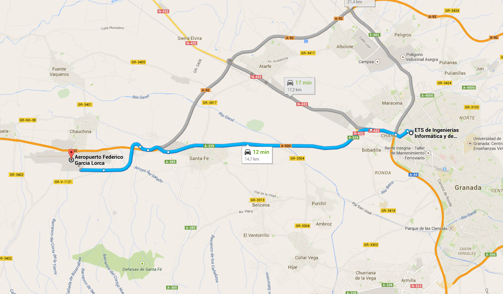

PRIMER CONGRESO DE CEIIE
Llegar en avión
El aeropuerto de Granada cuenta con conexiones a las principales ciudades de España como Barcelona, Madrid, Valencia o Sevilla, sin embargo, los vuelos internacioales hacia Granada son reducidos. El aerpuerto mas cercano con numerosos vuelos internacionales es Málaga. Hay lineas de autobuses desde Málaga cada hora, la duración del trayecto es de menos de dos horas.
El aeropuerto se encuentra a unos 20km de Granada y cuenta con un servicio especial de autobuses. Este autobus pasa por el centro y su recorrido acaba en el Palacio de Congresos, el precio del billete es de 3€. También se puede llegar en taxi, el coste medio del trayecto es de 25€.
